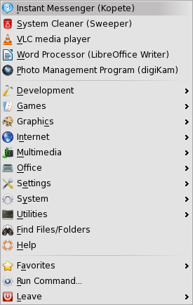

WELCOME
Welcome to the world of Linux and MEPIS. You have just booted the MEPIS Linux LiveDVD or LiveUSB and you now have the opportunity to explore some of the features of a whole new computer operating system before you decide to install it! Exploration, evaluation, comparison. . .decision. So far you have taken the first solid step toward a better computing experience, so enjoy exploring MEPIS Linux 11!
The MEPIS Desktop
This quickstart document is designed to acquaint you with the basic operation of the MEPIS 11 graphical user interface; detailed descriptions are provided by Section 3.4 of the MEPIS Manual and the MEPIS KDE4 Wiki. You are viewing this document in a window on the active, fully functional MEPIS 11 Desktop. As you read through this brief description, you are encouraged to explore the various functions and actvities described by clicking on, and opening, the menus or performing the functions described. If this window fills the screen, first click on Restore (double box in upper right corner) to proceed. By actively using MEPIS you will gain familiarity and find that it intuitively provides all the functionality expected of a fully capable, modern operating system. Anything you could do on your previous OS, you can perform with MEPIS. Try it!
All activities originate on the MEPIS Desktop in one of its four basic elements:
- The Main Menu (application launcher)
- The Panel
- The Desktop (workspace)
- The Tool Box (cashew)
The Main Menu
The Main Menu is represented by the MEPIS logo and is the leftmost icon on the Panel at the bottom of your screen. Click on it (all MEPIS clicks are single ones), and the application launcher menu is opened. The applications installed by default are included in this menu in the categories shown. By default, the first several entries are the most recently used applications. Menu entries in Leave provide the capability to suspend activities and to restart or turn off the computer. The categories are self-explanatory; browse through them to view the many available applications.
Included among the 80+ installed applications are:
- The web browser Firefox
- Kopete, an instant messenger client that supports several popular IM services, such as Yahoo, AIM, and MSN.
- Kontact, a single application for all PIM components: calendar, email, addressbook, sticky notes, RSS aggregation, etc.
- Libre Office, a full feature, six component office suite that is fully compatible with other major office suites.
- Synaptic Package Manager, the interface to thousands of applications which enables you to install, remove or upgrade applications, browse available applications or upgrade the whole system.
- VLC, a multimedia player that plays most multimedia files as well as DVD, Audio CD, VCD, and various streaming protocols including podcasts and multimedia streams from various network sources.
- Lucky Backup, a fast, safe, reliable and fully customizable application that backs-up and/or synchronizes directories.
- The Main Menu (application launcher) icon
- The Pager provides the capability to have multiple, separate desktops if needed to reduce the clutter on the working desktop.
- Quick launch program icons
- System Settings - Click on the crossed tools and you will find the many options available for structuring your system. This is the central place for changing the appearance and behavior of the MEPIS Desktop, managing network connections, configuring hardware components and performing certain system administratition tasks. To get a better sense of the numerous possibilities, click on a category icon and explore the options.
- Dolphin (File Manager) - Click on the file cabinet and a window will be displayed that shows the contents of the Home folder in the main panel. The panel on the left displays the partitions on your computer. All activities associated with opening, moving, revising or deleting data files are accomplished in this window.
- Firefox - The default web browser
- Kmail (Mail Client)
- In the middle, the Taskbar shows currently open windows. In this case, the Quickstart version of the MEPIS 11 USER'S MANUAL which you are now viewing.
- On the right, the System Tray holds installed processes:
- Information
- Upgrade notifier
- Clipboard
- Sound mixer
- Network manager
- Hidden icons
- Clock/calendar
- The panel Tool Box icon (cashew) is on the extreme right.
- Create New provides the capability to add desktop links to files, folders and web pages. This function is particularly useful for putting frequently opened URLs on the desktop for quick access.
- Icons provides the capability to align the icons to a grid and to lock them in place.
- Run command opens a tool for searching and launching files, applications and web pages. It can also be used for more generic operations such as a calculator or unit converter.
- Add Widgets opens a panel that displays a menu of widget functions that can be added to the desktop workspace. All widget related activities can only be performed when widgets are unlocked.
- Add Panel creates a new panel at the top of the desktop workspace.
- Activities is a function in development that opens additional desktops like those created by the Pager.
- Lock Widgets prevents the addition, moving or removal of widgets on the desktop workspace and in the panel. This action also locks the panel. However, locking widgets has no effect on the desktop workspace icons representing folders or web pages.
- Lock Screen, when implemented, requires the user password to restore the desktop.
- Folder View Settings opens the desktop settings menu where you can change the wallpaper, choose the desktop configuration, change mouse functions and control the size, location and order of the desktop icons.
Detailed descriptions of these and all applications are available in the MEPIS Manual.
The most used applications can be made more readily accessible by right clicking on the desired application and choosing to add it to your favorites list in the Main menu, putting it on the desktop or in the panel.
The Panel
Across the bottom of the screen is the Panel, something of a one-stop shop for almost everything to which you might want quick access.
By default, the panel on the KDE desktop contains L-R:
When you hover the mouse pointer over an icon in the panel, a short description is displayed.
The Desktop (workspace)

The desktop workspace is the area in which open windows appear and icons representing folders, web pages and desktop widgets (self contained programs or activities) are located. By default, the folder view of the desktop workspace is shown with the initially installed icons in a column. Changes to the configuration can be made by right clicking in an empty area of the desktop to access the context menu and selecting the action to be taken from the options shown.
Again, you are encouraged to click on the various options and consult the MEPIS Manual to learn more.
The Desktop Tool Box (cashew)

Move your mouse pointer to the top right hand corner of the desktop and click the "cashew” to access the Tool Box menu that provides an alternate way to implement many of the functions of the desktop context menu. It also lists keyboard substitutes for Tool Box menu functions and a few additional commands.